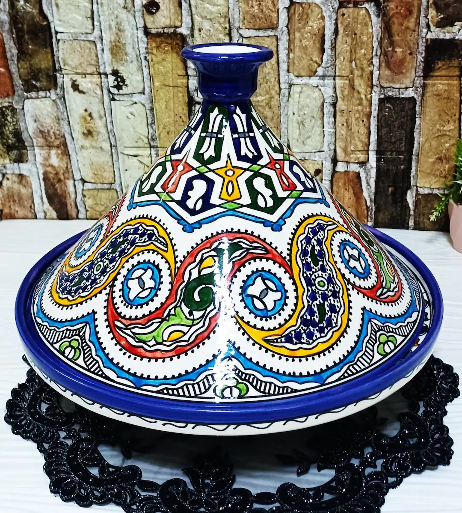

Présentation
La poterie marocaine fait partie des expressions les plus connues de l'artisanat traditionnel. Elle comprend des tajines, des assiettes décoratives, des vases et des zelliges réalisés entièrement à la main par des artisans de Fès, Safi et Meknès, selon des techniques transmises depuis des siècles.
Nos Produits de Poterie

Tajine traditionnel
Fabriqué à la main à Fès, idéal pour une cuisson lente et savoureuse. Le tajine est le symbole de la cuisine marocaine authentique.
Découvrir le tajine marocain →
Assiettes décorées
Peintes à la main avec des motifs géométriques traditionnels, chaque assiette est une œuvre d'art unique issue du savoir-faire artisanal marocain.
Découvrir les assiettes décorées →
Vases en céramique
Décoration intérieure inspirée de l'architecture andalouse. Ces vases allient élégance et authenticité marocaine.
Découvrir les vases en céramique →Catégories liées
Explorez également nos autres catégories d'artisanat marocain :